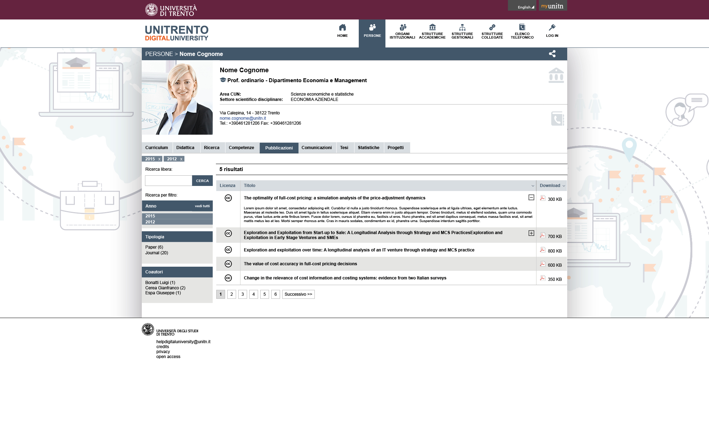
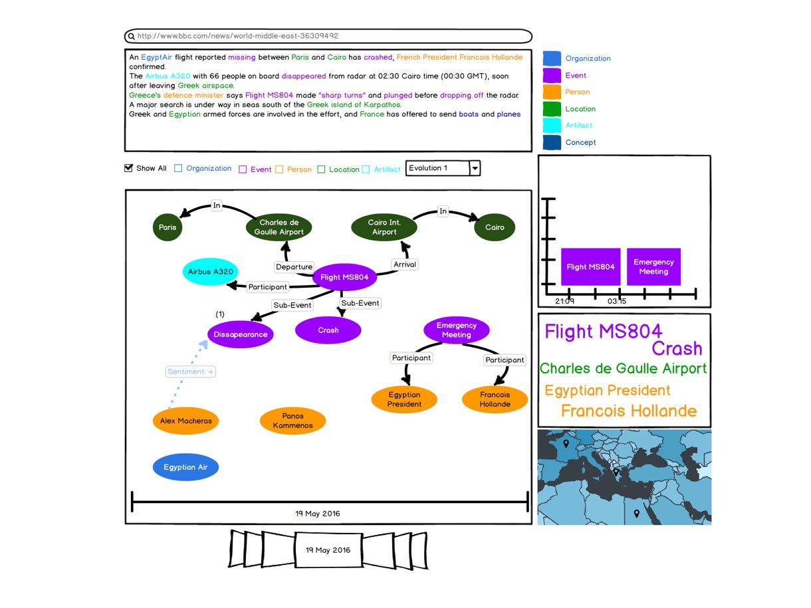

Created a new mixed reality experience combining Kinect and Wii.
How I Work?
How I design Usable Interfaces with better end-user experience?
What we want?
Requirement Gathering
Conduct various interview sessions and ethnographic studies with end users and the stakeholders to understand what is existing and what the user wants.
Analysis
Designing Scenarios and Personas for analyzing the requirements.
Design various scenarios, personas and analyze the process to explain the situation to the stakeholder.
Prototype
Design mockups and reiterate.
Design low to high fidelity prototypes free hand and using various tools such as Balsamiq, Mockplus and Omnigraffle.
Implement
Implement the Design.
I implement the design using various JS frameworks and libraries like Angular JS, Node JS and jquery.
Evaluate
Evaluate the design and implementation.
Evaluate the design using a set of end users. Afterward, evaluate with the end users using various UX evaluation criteria.
Now ready
for a
new story!
Experience
Previous Jobs and Projects
Senior UX Researcher
KnowDive
May 2018 - August 2018
Increased findability of projects and team members by 32% after overhauling the existing 'DataScientia' website.
Increased translation efficiency by 23% by developing a pipeline app to create multilingual content for the 'DataScientia' website.
User Experience Researcher - SHIB
NHS Scotland, University of Edinburgh, University of Trento
Nov 2017 - Mar 2018
Successfully integrated cross-jurisdictional and multilingual health apps for 'NHS Scotland' and 'Province of Trento' into a single web-based app called 'SHIB'.
Decreased page traversal time by 53% on 'SHIB' for medical practitioners.
User Experience Researcher - Intern
Center on Knowledge Graphs - University of Southern California
Jul 2017 - Oct 2017
Increased findability of related artists and artifacts by 20% for integrated data from 14 museums under AAC consortium by designing a single page web app.
User Experience Engineer
KnowDive
Apr 2013 - Jun 2017
Decreased the task completion time by 20% while searching for People, Departments, Journals in a Digital University Setting.
Increased usefulness (44%), learnability (38%), satisfaction (35%) by designing a new website for Trentino Open Data.
Successfully designed and developed a multi-view and exploratory design responsive web tool called SemUI with an increased UX value of attractiveness (19%), perspicuity (12%), efficiency (17%), dependability (13%), stimulation (16%) and novelty (11%).
Usibility Engineer
Fraunhofer Institute
Oct 2011 - April 2012
Increased the game immersion by 40% by embedding Kinect and Wii to a regular desktop game creating a mixed reality.
Software Developer
Sustainable Solutions
Mar 2008 - Aug 2010
Revised the User Interface from a desktop application to a web-based and mobile app increasing the data entry efficiency by 40%.
100% customer satisfaction by providing continuous support.
Education
Academic Career
P.h.D. in Information and Communication Technology
University of Trento - Science and Engineering
Graduated in April 2018
Masters in Computer Science
RWTH Aachen
Graduated in March 2013
Masters in Computer Science
University of Trento
Graduated in March 2013
Bachelors in Computer Engineering
Purbanchal University - Kantipur City College
Graduated in 2008
Multilingual DataScientia Website
DataScientia's vision is to design and develop an integrated infrastructure to manage diversity that exists in data.
I was asked to design and develop a new multilingual website to advocate the vision of the foundation.
Scope
As a User Experience Architect (also a post doctoral researcher), I was determined to design and develop this website.
My major focus was on the simplicity in design to cater the need of the multilingual audience.
I also emphasized the extensibility and customizability of the template to maintain consistent information architecture.
Furthermore, my concentration was also on the cohesive content, color tones and easy template based content creation
for improved information multilingually.
Process
Before adding various UI features and bling bling aesthetics,
I focused on the design process. This way, I was able to stay in track and was not diverted.
To get the intricacies in design, I continuously interacted with the founder and other team members about the design and the information architecture. Before directly jumping in tempering with Wordpress I started with basic requirement questionnaire.
Some of the questions I asked were:
Interview Questionnaires
What is the primary goal of the site?
Who Is Your Target Audience?
What can people do on this website?
What do You like about the current website?
What do You dislike about the current website?
Are there similar works relatable to this website?
What do you think the success of the website is?
Do we have extra materials for the website like brochures, flyers?
Do you need support for smart devices as well? and
What are the essential pieces of information that shouldn't be neglected from the website?
Mockups
I looked around for similar foundation websites, generated multiple low (hand sketches) and medium fidelity prototypes (using Mockplus).
An interesting point came out during the early design cycle. Since the website was multilingual, I create multilingual mockups. It came out to be a flaw as nobody in the KnoDive group could speak more than two languages (Italian and English). We discussed a situation where a user filled a form in native Afrikan language.
In that situation, there would be no chance for the team members to understand anything. I quickly reiterated the design and created contact us page in English to solve the issue.
To also make it easier, I created a menu item called 'English' if any other language was selected before. Addition of the button increased the discoverability of the information by 17%.
The portal consists of five similar looking websites.
Therefore, visual consistency among all websites was mandatory.
Similarly, cross-browser compatibility was also a major issue for design and development.
There were four different initiative leaders and each leader was responsible to maintain multiple projects.
We devised a process to maintain various projects and publications.
Faceted Search facilitating easy discovery
To facilitate better discoverability of information,
I implemented card layout. These cards segregate information easily. Furthermore, to help discover contents
like publications, team members and projects, we implement faceted search throughout the website.
Tool to generate multilingual text
The website currently is in five different languages. By the end of the year, it is expected to be 20. Creating multilingual content of optimum quality is a jaw-breaking process. To ease the creation for the content designer, I designed a simple mechanism. The tool lists the source language (English) in the left column and the target language in the right column. The content creator only has to fill on the right column. This process increased the efficiency of content generation by 57%.
The final implementation started after agreeing on various design intricacies and robust information architecture. The website was replicated for four similar projects namingly Universal Knowledge Core, StarLinker, Digital University and Smart University. The work is still going on.
Summary
The website is still on its early phase, the team is still finalizing logos, but now the information architecture is robust. Before leaving the group, I generated various implementation and user documentation. I had various meetings and interactions with the new staff to facilitate a smooth transition.
Type: Individual Project
Role: Requirement Gathering, Responsive Design, Wordpress based Front End Development
Timeline: May-August 2018
Safe Havens in A Box (SHIB)
Integrated cross-jurisdictional health UI.
Context
While conducting various medical research, most of the time, we do not have adequate data to perform further analysis
of the effect of various drugs over a long range of time. To mitigate the situation, medical data from different across
Europe were integrated. The new situation created a new challenge of visualizing cross-jurisdictional data in a fluid integrated UI.
Scope
We showcased a demo UI integrating data across Scotland (synthetic data) and Trentino (anonymized data). The data were based on patients, drugs, hospitals, visits and drug products related to the anticoagulant experiment.
Process
The basic classes (entity types or eTypes) were different from the SemUI application. The major classes were admissions (visits), prescriptions, death, medical drugs, drugs product and personal information. Similarly, it was mandatory to show medical codes either in ICD-10 or SNOMED specification.
I asked various questions to the data scientists like:
Interview Questionnaires
What is your role?
What are your primary and secondary goals?
What existing system are you using to complete your task/job?
What kind of information does the tool provide?
What do you like and dislike about the tool?
Where did you learn the skills to perform the job?
How often do you use the system?
What are the problems faced while completing the job?
How do you measure your success?
Personas
Federation want statistically significant analyses performed rapidly and reliably on populations more significant than a single
jurisdiction. Commercial organizations want to work with local authorities to provide services that support more extensive,
the faster experiments based on real data. This allows them to process the information and provide an alternative result quickly.
Lastly, data scientist wants to share experimental results with other two stakeholders promptly. She also has to be aware that the
information shared is as accurate as possible. For this, she has to first get anonymized data from the research clients to process
them, integrate them by understanding the basic terminology used and analyze them.
For all these scenarios, I designed various personas low hand sketches and mockups using Balsamiq.
Mockups
Furthermore, from the interview session, it was evident that the data scientists require a desktop application
where they can view many objects at once. We investigate the adaptability of SemUI application in this scenario.
The situation was appropriate to implement multiview visualization technique. The result shows that medical practitioners
could benefit from such a visualization scheme.
MultiView Visualization
The major need of any visualization tool is for data scientists.
Currently, the anonymized datasets are scattered across many CSV files.
Though the process is repetitive, this hinders an effective exploration of related files.
She has to open files individually, check their data structure, understand the terminology used, map them across many
files and then only she will be able to use the result.
Summary
The overall UI was thoroughly liked by the Data Scientist and Officials from the SHIB project. Now the UI is going for production.
Type: Team Project
Role: Requirement Gathering, Scenario, Mockups, Responsive Design, Questionnaire design, Design Multiview visualization, UI development using Angular JS and Node JS.
Timeline: Nov 2017 - Mar 2018
Semantic-UI
Integrated linked data app featuring museum data
Amecian Art Collaborative initiate the process to link data related to museums and artifacts from 15 museums.
However, there was no tool to visualize Linked Data (LD) in an understandable human form. It was necessary to make various stakeholders such as researchers,
curators, and the general public aware of integrated cultural heritage data.
AAC’s major need was to have scalable, easy-to-configure, easy to work with libraries for creating the links so that they could release accurate information which was their major concern.
They used LOD technique to store the information. KARMA tool was used for the data conversion.
CRM ontology was used as the data model. This ontology is very complex and data scientist had their own mapping techniques which hindered designing a reliable general query across museums.
I designed a multiview tool called Semantic-UI which could easily visualize linked objects in four different views simultaneously.
Process
The process was started asking various questions to the lead researcher and curators from the museum.
Interview Questionnaire
What is your role in the museum?
What are your primary and secondary goals?
What existing system are you using to complete your task/job?
What kind of information does the tool provide?
What do you like and dislike about the tool?
How do you manage duplication?
On what basis do you comply with the CRM Ontology?
Where did you learn the skills to perform the job?
How often do you use the system?
What are the problems faced while completing the job?
How do you measure your success?
Linded Data- Scenario
We understood that there can be multiple possible connections and relations among triples. Some of the issues were:
An artist can create single/multiple artifacts.
Multiple Artists can create single/multiple artifacts.
An artist can belong to multiple museums.
Various copies of the same artifact can exist in multiple museums.
An artist's information can be stored differently as Leo Da Vinci or Leonardo Da Vinci etc.
Variation of entity types across museums.
An artist can be influenced by many other artists.
An artist can influence many other artists.
An artifact style can influence many other artifacts.
An artifact can be influenced by another artifact.
There are more than 1.5 Million Triples.
Mockups
I designed both low and medium fidelity mockups consulting professor, curators and the students. The design was liked by all and we agreed on multiview presentation as well.
Summary
I evaluated the app on six UX dimensions as attractiveness (excellent), perspicuity (above average),
efficiency (good, dependability (above average), stimulation (excellent) and novelty (good) against
standard UX template. This template consists of an evaluation of 2000 web apps.
The app is fully functional and is hosted at USC's internal server.
Universities around the world have to maintain a huge amount of information related to people.
They also host various intellectual resources such as books, papers, patents, courses, projects, budgets and thesis.
In the current scenario, all these information are scattered among various data silos.
Normally, these data need to be merged to fulfill the specific need.
These merging processes are a specific tailored application with limited scope.
Though this technique is highly practiced, it is not scalable and provides hindrance in search and analysis of data.
Therefore, it was cumbersome for students and staffs to find professors, various departments, research groups and so on.
Furthermore, it was impossible for a prospective student to search for information.
We designed interviews, mockups and tried to implement a new well-connected system called Digital University.
Besides, there was also a requirement to design an mockup that facilitates the overall evaluation of the university.
Evaluation Module
The purpose of the evaluation configuration submodule is to be able to define and manage the different
evaluation methods and the related information used for different universities, faculties and persons.
The main users for this submodule are authorized university/faculty staff that is in charge of defining and maintaining
the evaluation rules for that institution.
Process
The process started asking various questions to students and staffs. The questions were:
Interview Questionnaires
Have you faced any situation where you have to access university’s website on weekend out of some emergency?
What is your role in the University?
On What regards are you using the university’s portal (current version?)
In your opinion, what are the existing problems in the current version?
What new changes do you want to see?
Have you ever faced any trouble searching for colleagues, staffs or and other Departments?
Can you share your experience?
How do you usually search for articles from colleagues?
Have you faced any issue searching for articles (artifacts) from colleagues?
Personas
All the users mentioned that the search and exploration process is not fluid.
There is no uniformity on the information presented in a page.
Furthermore, some pages open in new tabs some doesn’t.
The multilingual aspect is not maintained throughout the portal.
Furthermore, it is not easy to change the language from one to another causing a major problem for the non-native stakeholders.
The way in which articles are distributed is not clear. Currently, the articles presented on the portal are not associated with any people or department.
So, when they are found, they will directly open as a PDF file (mostly) so a user cannot directly associate from where the file is from.
Even if the documents are associated with people or department, it is not obvious.
It is difficult to retrieve information effectively at a short period and it is hard to distinguish periodic information.
The organization is very messy and creates a problem when users don’t know what they are searching for.
Lastly, different departments in the portal use their own technique of presentation and are not standardized creating confusion for the end users.

Conceptual Design
I also designed a different kind of prototype. This prototype was phenomenally different from traditional visualization and was a starting point for multi-view visualization.
The UI was evaluated with Professors and students. They expressed that could easily swiftly their task.
Summary
The mockups were implemented and the various changes from the interview sessions were also considered and implemented.
Journalism is witnessing lots of innovation and rapid changes in this digital market.
News agencies and journalists are facing two major challenges.
They are, how to disclose and present the data so it can be easily consumed by the users?
The information visualization in the media sector should converge with the journalistic visual thinking skills
The proposed UI presents evolving information in a frequent interval of time.
The visualization is adaptive since it changes accordingly to the guiding properties of an entity, thus it
facilitates a user to assimilate information in a different way creating the seamless user experience.
Process
We started the process by asking various questions to local journalists from Trentino Province. Some questions were:
Interview Questionnaires
What is your role in the Agency?
What kind of reporter are you? (Global scenario or Local)
What are the existing problems in finding news leads?
How do you want it to be?
Do you have trouble searching for provenance of the news?
How do you usually search for articles for news leads?
Have you faced searching for articles?
Based on the interview sessions we defined various storyboards (comics) and personas.
Story Boards
The scenario was set for a university student trying to complete his assignment on the last day before submission.
We also designed a situation, how semantic technology would help ease one's task.
Persona
As a specific theme, we chose cases for searching and exploring the news archive.
This includes exploring the video content, audio, images or preexisting textual news leads.
We specified three different kinds of user groups.
Journalists- Different news agencies create news based on the news already published by others.
For a specific event, the news reporter will go that specific location and collect news.
They take interviews with people, get bulletins from specific organizations, for example, a government or private
organizations and create news. But for most of the cases, they will look for previous news leads like from other news agencies. T
hey might also have to analyze different content like Videos, audios images and so on from different sources
(like a news organization and also individuals)to give their perspective to the news.
Verifying the source of the news is really important for the credibility of the news.
Also, news reporters have to comply with media laws.
General Public- The general public needs to find some specific information according to their requirement or interest.
These people are more interested in finding facts or events that happened.
Currently, to find this specific information, they might have to go through the digital archive and look for specific information.
This is a time-consuming process and finding a specific information on a news archive will be like finding a needle in a haystack.
They might not have a clear goal. These people might only be exploring for an educational or recreational purpose (for fulfilling their
own curiosity).
Specific User Group- Some specific groups might only be interested in content extraction and presentation.
Instead of going through all the resources (audio, video, and images) they may be interested in seeing evolving knowledge
and how the plot unfolds in a summarized and quick way.
Mockups
Based on the personas and scenario presented above some low fidelity prototype were designed using Balsamiq.
The main focus was on the visualization of entities in different visual metaphors.
In terms of visualization, the main design rationale was to allow seamless navigation and presentation of the
semantic content to the end users to make them understand the data from the different perspective.
Along with that, the major concern was on how to present timely evolving content.
Based on the content and the task to be performed the interface should be customizable enough to have the most
effective visualization. To cater to this scenario, we designed the UI based on the dashboard layout providing
a different level of details and in different contexts. The UI is adaptive and presents an entity at the runtime
by allowing simultaneous visual summaries that are based on different defining properties an entity possess.

The focus was on the visualization of news in different visual metaphors.
In terms of visualization, the design rationale was to allow seamless navigation and presentation of the semantic
content to the end users to make them understand the data from the different perspective.
Along with that, the important concern was on how to present timely evolving content.
Based on the content and the task to be performed the interface should be customizable enough to have the most effective visualization.
Summary
Though the mockups were infromative and useful, the project didn't kick off the ground.
Type: Group Project (Me, Enrico Bignotti, Mattia Zeni)
Freedom from a data portal to data exploration apps.
In this Open data scenario, there were various connected Geo Objects such as geographic locations (mountains, lake, cities),
buildings (restaurants, hotels, ski shops), and transportation mediums (like a bus, ski lift) and so on. All these have to
be connected and visualized in a human understandable way.
Various visualization applications are being developed in the Open Linked Data community.
Most of these applications are domain-specific and serve specific purposes.
They work with specific scenarios and require fixed, predefined data.
Moreover, these applications use different visualization and navigation techniques.
They usually require a certain level of technical knowledge and thus add an extra effort for the common users.
We propose a novel approach to align open data with the user experience.
In this approach people intuitively perceive things as entities and categorize them according to their similarities and differences.
We describe open data as a network of interrelated entities. On top of this entity-centric description of open data,
we build a visualization layer.
Process
I had continuous interaction with the potential employees, open data advocates, lawyers and journalist.
I tried to understand their need. Their major concern was the accuracy of information dissipated to the public.
Furthermore, they were also guided by European Open Data Directive.
Scenarios
After multiple iterations, we designed various storyboard and personas for tourist visiting Trentino. We created both before and after the situation. How the tourist had difficulty before and how he was eased later on.
Mockups
The major interest was on a map-based interface. So, we designed various prototypes to list objects an on
a map and provide alternative visualization of information to the end users.
We also emphasized creating a semantic connection menu. Semantic connection menu displayed items that are
connected spatially or socially. The semantic connection menu or relations menu was highly liked by the end users.
Conceptual AR App
Along with the desktop application, we exercised on an AR app that is able to identify the geographic object and visualize
the information instantaneously. We explored both Android and ios version of it.
Summary
The mockups were implemented and the various changes from the interview sessions were also considered and implemented.
We also performed various usability and user experience evaluation. The overall achievement was outstanding.
Our challenge was to create a mixed reality atmosphere by embedding different outer devices like Kinect and Wii to a normal desktop game.
For this setting, we chose a biathlon game. It required both skiing and shooting. That means it used multiple devices working simultaneously.
Understanding the design
We try to understand the different subtleties of the game.
For skiing, what are positions that a player has to make?
Similarly, for shooting what are the gestures and actions that a player require were understood.
We realized Kinect was very good on capturing ski gestures. However, the aiming for the shooting was more precise for Wii.
To make the environment more immersive we also included Wii board which could find subtle tilt movements.
Summary
The mixed reality environment was realized. The overall achievement was extraordinary.
We designed a mobile game named ‘Concept Challenge’ that provides synsets for the Chinese students wanting to learn English.
Players are presented with a question in English and a set of options in Chinese.
Then players have to choose the most related option from an option set. Each game consists of 10 to 60 rounds depending on the kind of game.
Once a game is completed, it provides feedback referring to the vocabulary size or the English skill level based on the answers of the player.
In this game, the players test their proficiency in English and simultaneously find errors in the Chinese synsets.
Process
Most of the language learning apps were desktop. However, students wanted to spend more time learning English in their phone. They mostly didn't cheat and were eager to find problems.
We designed a series of interview questionnaires (in Chinese). Based on the result we designed prototypes and evaluate.
Summary
Our implementation of the game shows that the game players with the very limited linguistic background can also be involved in
finding different kinds of error in a Chinese lexicosemantic resource which can be a major help while building a high-quality
lexico-semantic resource. The proposed game model can also be extended to support many different languages.
Furthermore, the same people can also be involved to not only find different kinds of errors but also to rectify those errors
to generate high-quality semantic resources.